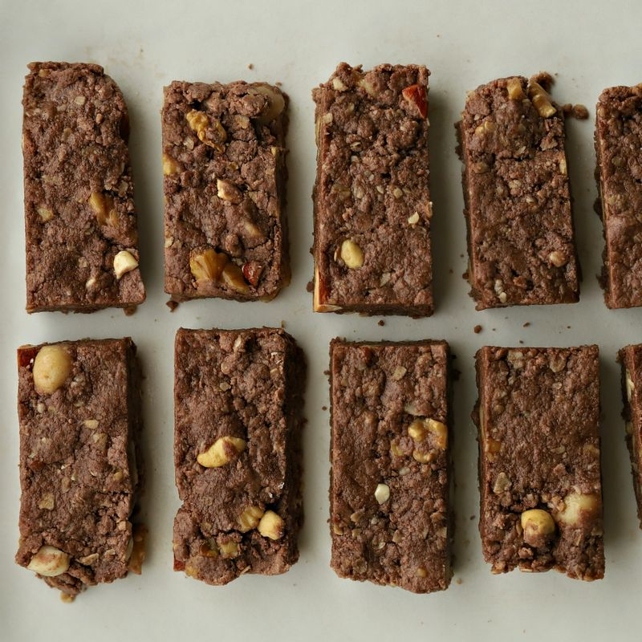
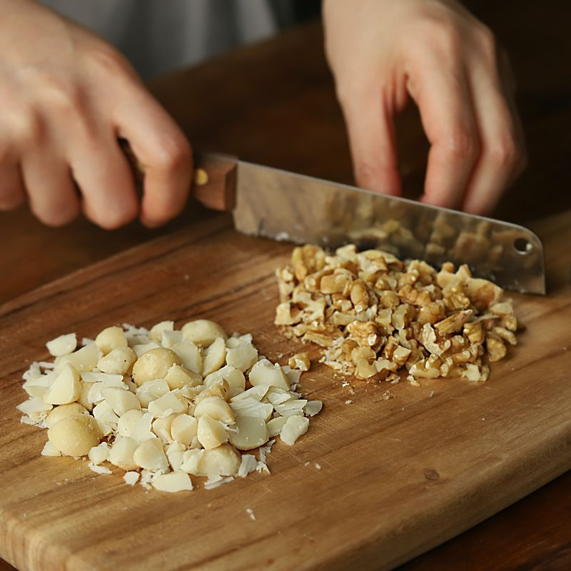
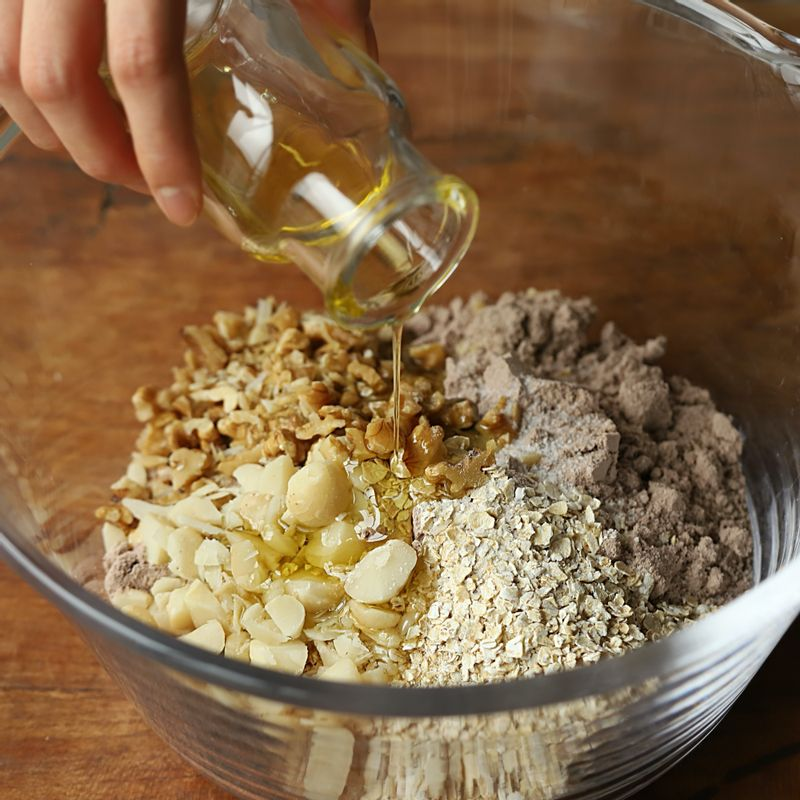
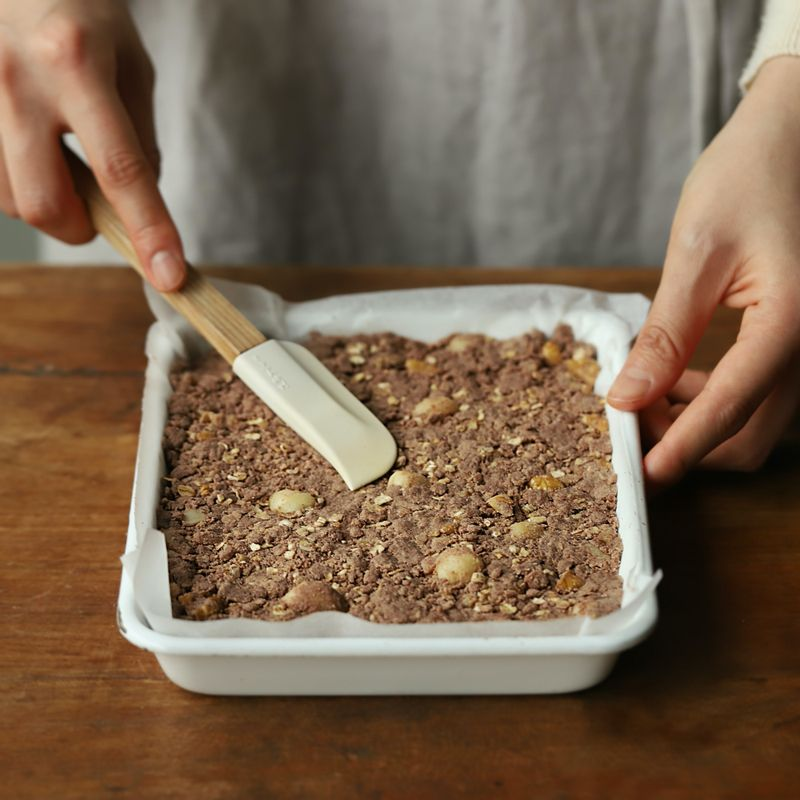

레시피2: 프로틴 바
기본 재료
- 프로틴 가루(초콜릿) 2컵
- 아몬두 가루(생략 가능) 1/2컵
- 구운 호두 1/2컵
- 마카다미아 1/2컵
- 오트밀 1/2컵
- 꿀 2큰술
- 코코넛 오일 50g
- 물 3큰술
- 소금 약간
Step 1
구운 호두와 마카다미아를 굵게 다져주세요.
(기호에 따라 햄프씨드, 카카오닙스, 오트밀, 그래놀라 등의 재료를 넣어 만드셔도 돼요)
Step 2
볼에 프로틴 가루와 아몬드 가루, 견과류, 오트밀, 소금을 넣은 후 꿀과 오일을 조금씩 부어가며 섞어주세요. 물을 넣어 뭉쳐주세요.
(손으로 뭉쳐보았을 때 잘 뭉쳐질 때까지의 농도로 맞춰주세요)
(코코넛 오일은 전자레인지에 돌려 녹여 사용해주세요)
Step 3
종이호일을 깐 틀에 넣어 반죽을 적당한 두께로 펼쳐주세요. 냉동실에 넣어 1시간 정도 굳혀주세요.
(틀에 넣지 않고 손으로 뭉쳐 바로 드셔도 좋답니다)
Step 4

적당한 크기로 잘라 건강하게 즐겨주세요.